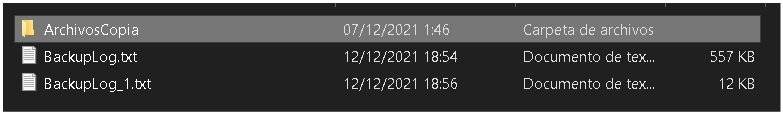
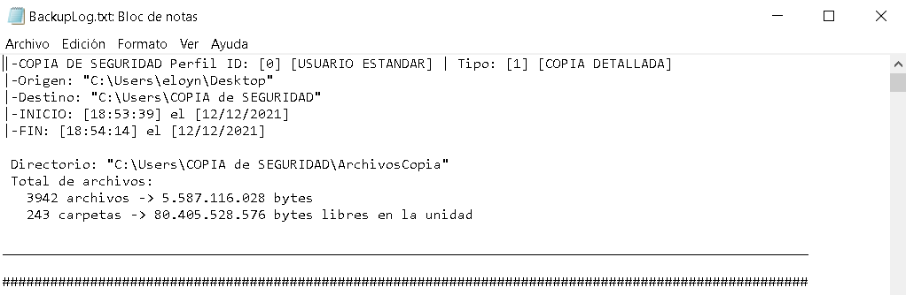

Esta página y sus desarrolladores no se hacen cargo del mal uso de los programas aquí expuestos.
CopyLeft  2021, CodeVaried.
2021, CodeVaried.
Tipo: Programa Copia de Seguridad
Requisitos: Windows 8.X, Windows 10.X
Este programa se encarga de copiar todos los archivos según el perfil seleccionado de una ruta origen respetando la estructura de directorios original, y crea un registro detallado del proceso.
Al ser un simple script no necesita instalación, en la descarga se podrá elegir en descargarlo en ".exe" o en ".cmd" (editable)
Ruta Origen (La ruta de la carpeta o unidad que se desee hacer la copia de seguridad)
Ruta Destino (La ruta de la carpeta o unidad donde se quiera guardar los archivos copiados)
(Opcional) Nombre de la carpeta (Este es el nombre de la carpeta que se creara en la ruta destino donde se guardaran los archivos del programa junto a la copia de seguridad)
Este sería el resultado de dos copias, como se puede observar han sido creados dos registros.
Dentro de los registros se encuentran todos los archivos que han sido copiados uno a uno por orden entre otra información, como por ejemplo el tiempo desde el inicio de la copia hasta su fin.
Este programa debe de ser ejecutado como administrador para evitar errores. Al ser un archivo ”.exe” desconocido el antivirus de windows posiblemente no deje ejecutarlo, para evitar esto puedes desactivar la protección a tiempo real de windows o puedes descargarte el script ”.cmd” y ejecutarlo manualmente como administrador.
CONTRASEÑA : codevaried
Esta página y sus desarrolladores no se hacen cargo del mal uso de los programas aquí expuestos.
CopyLeft 2021, CodeVaried.